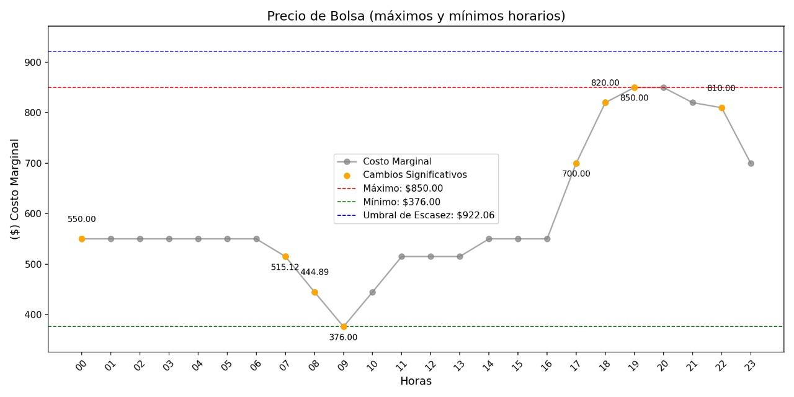

Proyecto Automatización Facilidades Operativas

Este sistema está diseñado para la gestión automatizada y en tiempo real de datos estratégicos en los mercados eléctrico y de gas natural en Colombia. Su principal objetivo es optimizar la recopilación, procesamiento y análisis de información crítica, facilitando la toma de decisiones estratégicas en la operación del sector energético.
El proyecto se compone de cinco módulos, cada uno enfocado en un aspecto clave de la gestión: monitoreo del despacho eléctrico, cálculo de tarifas de transporte de gas, análisis de costos marginales, consolidación de volúmenes de gas transportado y la automatización de reportes de datos del operador de mercado:
Estructura
graph LR
A[GEAM_Operaciones] --> B[Eléctrico]
A --> E[Gas]
B --> C[Despacho_Nacional Preliminar]
C --> D[Despacho_Nacional Ties]
B --> F[Predespacho_Ideal]
E --> G[TGI]
E --> H[Promigas]
A --> I[Calculadora_Tarifas]1. XM:
Automatiza la consulta, procesamiento y análisis de datos del mercado eléctrico colombiano mediante la API de XM y la librería PyDataXM. Facilita el acceso a información clave como consumos, generación, precios, niveles de embalses y demanda del Sistema Interconectado Nacional (SIN), mejorando la eficiencia operativa y permitiendo la identificación de tendencias del sector.
2. Datos TGI y Promigas:
Automatiza la descarga y procesamiento de datos de volúmenes de gas transportado por los actores clave TGI y Promigas. Proporciona información crítica para la gestión operativa diaria, optimizando la administración del suministro de gas natural en Colombia.
3. Predespacho Ideal:

Gestión automatizada para obtener y analizar información sobre costos marginales y precios de oferta en el mercado eléctrico. Permite realizar un análisis detallado para la toma de decisiones estratégicas en la operación del sistema.
4. Despacho Nacional:
Automatización del monitoreo, descarga y análisis de datos del programa de generación y los recursos asociados al Despacho Nacional. Este sistema garantiza eficiencia operativa y precisión en la gestión de datos del sector eléctrico.
5. Calculadora de Tarifas:
Optimiza el cálculo de tarifas de transporte de gas en el Sistema Nacional de Transporte (SNT), determinando costos según origen y destino. Inicialmente se usaba un modelo de grafos, que permite representar redes de transporte y trayectos. Sin embargo, este modelo ha sido sustituido por una visualización directa en mapas, donde los puntos de interés (SNT) se marcan y se genera la ruta necesaria.
Arquitectura del Sistema
graph TD
A[Portal XM] --> B[Despacho Nacional]
A --> C[Predespacho Ideal]
D[Portal TGI] --> E[Consolidado Recibos]
F[Portal Promigas] --> G[Volúmenes Entregados]
M[Tarifas SNT] --> N[Rutas requeridas]
B & C --> H[Procesamiento Eléctrico]
E & G --> I[Procesamiento Gas Natural]
H & I & N --> J[Base de Datos Central]
J --> K[Reportes Automatizados]Flujo Operativo Integrado
-
Programación Centralizada
Tareas Windows configuradas para ejecución diaria:- 08:00: Monitoreo gas (TGI + Promigas) Cada 30 minutos hasta las 11:00 a.m. para garantizar la optención de toda la información.
- 08:00: XM, Actualización de los indicadores del mercado energético.
- 09:00: Monitoreo eléctrico Predespacho hasta tanto salga el reporte.
- 09:30: Monitoreo Despacho Nacional y Ties.
-
Alertas Unificadas
Sistema de notificaciones combinado:- Correo: Envío de alertas críticas.
- Whatsapp: Envio de información en tiempo real.
- Archivo log único:
registro_operaciones.log.
Características Clave
-
Automatización Completa:
Los sistemas automatizan la descarga de datos desde el portal oficial de XM, procesan los datos en tiempo real y generan reportes detallados. Esto elimina la necesidad de supervisión manual constante y mejora la precisión operativa. -
Interactividad y Configuración Personalizable:
Ambos sistemas cuentan con interfaces gráficas intuitivas desarrolladas en Tkinter, que permiten:- Monitorear en tiempo real.
- Configurar parámetros como tiempos de espera y alertas específicas.
- Cambiar entre modos de operación según las necesidades operativas.
-
Ejecución Automática:
Por medio del gestor de tareas de Windows, se programa que los scripts se ejecuten automáticamente e inicien el monitoreo en el horario establecido.